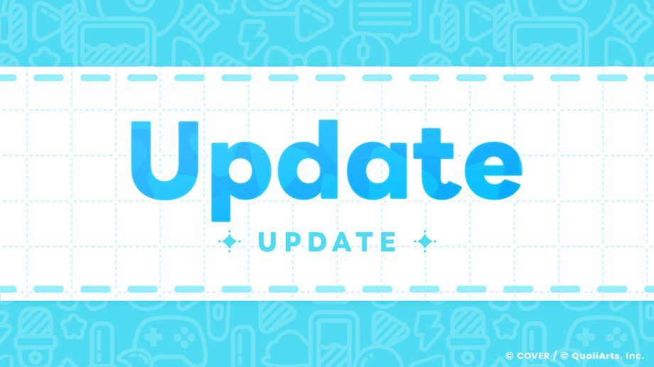
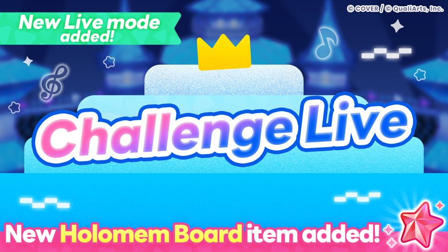
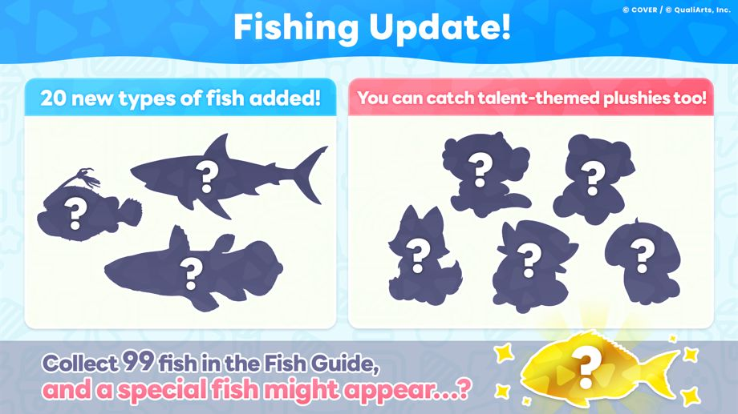
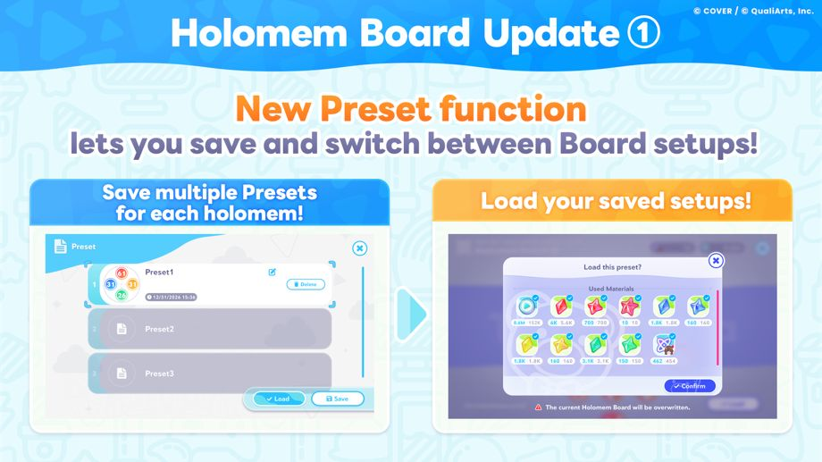
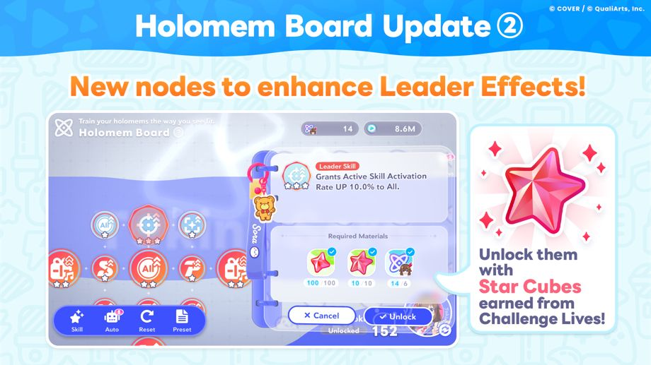

Thank you for using our service.
This is the hololive Dreams management team.
2026-11-25 11:00:00: The game has been updated to Ver.1.3.0.
New Minigame, Puka Puka Fight is here!

2026-11-25 11:00:00 New Minigame: Puka Puka Fight!
Puka Puka Fight is a strategy game where you knock each other into the water from floating platforms.
Move the holomems on your team and those you've recruited strategically to gain an advantage.
Face off against various holomem in Solo Play or other players in Multiplayer.
New Live mode! "Challenge Live" is here!

2026-11-25 11:00:00 New Live mode! “Challenge Live” is here!
"Challenge Live" is a new mode where you aim to reach the Target Score set for each Stage.
Stage clear rewards also include Star Cubes, a new material used for the newly added Nodes found in the Holomem Boards.
Make use of each Stage's designated Bonus Members to progress all the way to Stage 100.
Other updates
◆Fishing Update

- 20 new fish species will be added, along with new completion rewards for the Fish Guide.
-
Mandarins, Gummies, and Star Bait are now available as fishing bait at Bae's Bits & Bobs.
Mandarin and Gummy are unlocked by completing Soda Pop Lagoon's Main Quest, while Star Bait will be unlocked by catching 99 species of fish.
◆Holomem Board Update

-
Holomem-Specific Board Presets
Added a preset feature that lets you save and load multiple Holomem Board configurations for each holomem.

-
Added Nodes that require new materials
Added new Nodes to Holomem Boards that enhance Leader Skills.
Unlocking the new Nodes requires Star Cubes, which can be obtained in Challenge Live.
◆Improvements to Lives & Updates
- You can now play Lives without consuming Live Boosts, even when you have some available.
- A confirmation dialog will now appear when recovering a large amount of Live Boost.
- On the Live Boost Recovery screen, pressing [<<] or [>>] now adjusts the recovery amount in steps, stopping at 0, 10, 20, and 99.
- Improved navigation between the Song Selection and Score Rating screens.
◆Other Updates
-
Added a feature that lets you Bloom multiple Members at once.
You can now Bloom all eligible Members at once using "Exclusive Bloom Pts." -
Added a “Use Bloom Stone” checkbox to the Bloom Member Selection Screen.
When checked, Members who can be Bloomed with Bloom Stones will also be displayed. -
Added a “Use Bloom Stone” checkbox to the Bloom Screen.
When checked, Bloom Stones will be used to Bloom a Member.
* When you have no Bloom Stones, the check box will not appear.
* Member-exclusive Bloom Pts will be used first. -
Mega Sphere Coins can now also be earned from Holowork.
Mega Sphere Coins can be earned from Recordings and Idle Talk Streams. -
Confirmation dialog display when using Bloom Stones.
A confirmation dialog will now appear when using Bloom Stones. -
Added a feature that displays a Member's base parameters on the Member Details screen.
You can now display base parameters alone, excluding Bonus effects from Holomem Boards and other sources. -
Added a feature that lets you move to the corresponding holomem for Holomem Quests.
You can now move near the corresponding holomem by selecting their icon on the Holomem Quest screen. -
Added a feature that lets you set the visibility of each profile item individually.
You can now set each item to Public, Private, or Only Friends.
◆Other adjustments and fixes
-
holo Home gifts have been adjusted.
Holomedals are now rewarded regardless of the day of the week. -
You can now convert Training Items of one color into Training Items of another color at the Soda Pop Lagoon "Ichijou VIP Lounge."
You can now also exchange Beads and Crystals into items of a different color by spending Soda Pop Coins.
*Unlocks upon completing Main Quest Chapter 3 "Soda Pop Lagoon." - Certain Hidden Treasure spawn locations in Harmony Garden have been adjusted.
-
Adjusted the following Holomem Board icons:
Active Skill Activation Rate UP and Score Support effect. - Adjusted facial expressions, colors, and other details for some holomem's Live outfits.
- Made picking up items from the ground in the park smoother.
- Minor fixes to various Minigames.
- Fixed various minor bugs.